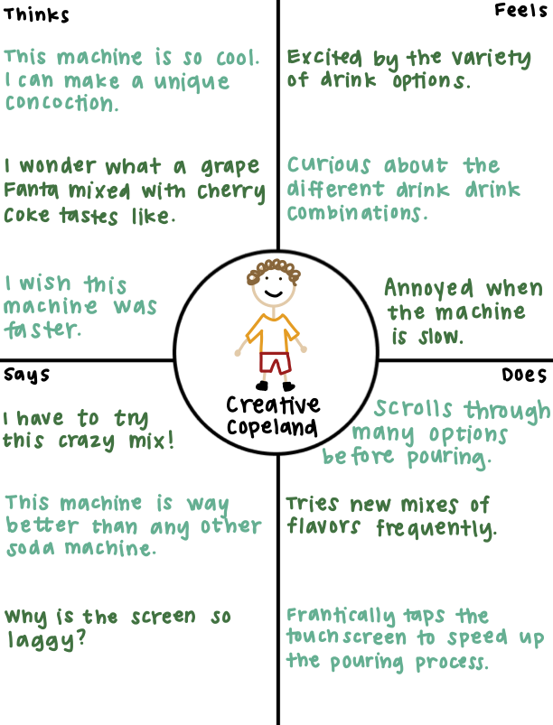
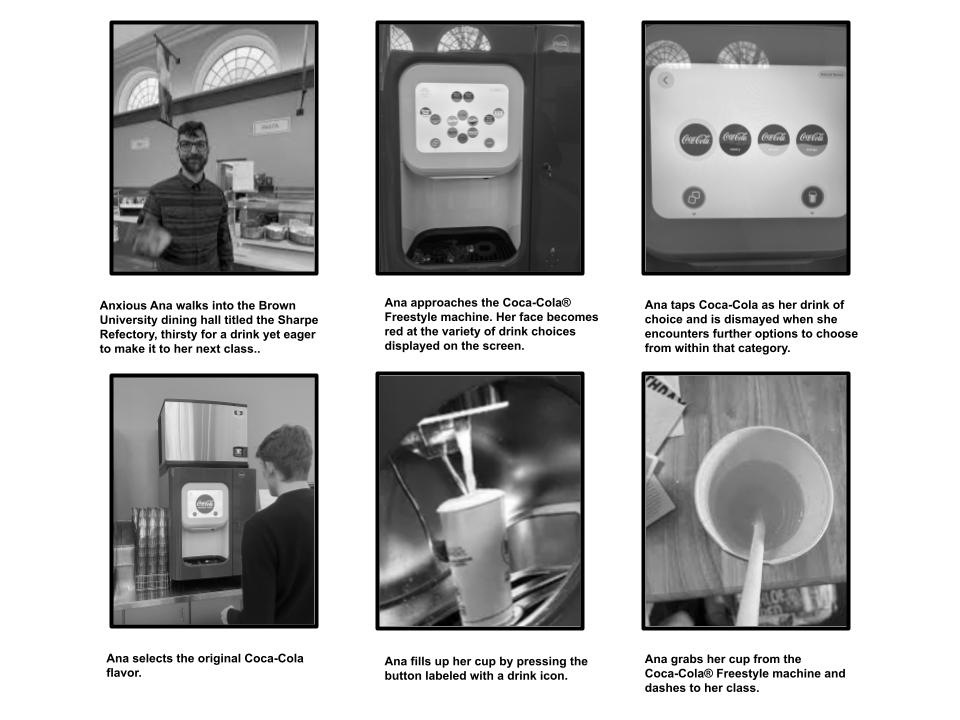

Illustrating Coca-Cola® Freestyle user needs and experiences based on
empirical observation

The Coca-Cola® Freestyle is a touch screen soda fountain which enables
users to dispense ice cubes and Coca-Cola drink products, allowing
users to pour and mix a variety of drinks with ease. Users can access
the features of this interface via touch or a mobile device.

This persona is a time-conscious student overwhelmed by the number
of choices offered by the Coca-Cola® Freestyle.
She experiences interface problems because the large variety
of drink options can be overwhelming, the touchscreen is sometimes
unresponsive and others make accidental selections.
She reflects the users observed who were visibly frustrated
when using the machine. They gave off the impression of being
pressed for time and found the many customization options to be more
of a challenge than a benefit.
The design of the Coca-Cola® Freestyle, which encourages
exploration, may not suit users who want a quick, efficient
experience.
This persona is a student excited about experimenting with unique
drink combinations, eager to try new flavors but frustrated by slow
touchscreen responsiveness.
He experiences interface problems because the touchscreen can
be slow to respond and some options are disabled, disrupting the fun
of choosing different flavors.
This persona represents users who were enthusiastic about exploring
flavor combinations. They enjoyed the machine’s customization but
also encountered usability frustrations, particularly with the
touchscreen responsiveness.

User Interview Responses
Grace "liked" the sticky bar with the slideshow of photos near the top
of the event page.
Users primarily used the machine for customization and variety. Most
said it met their expectations, though one mentioned the interface was
slightly confusing at first.
Grace said it "would be nice to show up to X photos [in the sticky bar
slideshow] and gate everything else" for after partiers RSVP 'yes' to
an event.
All three of the interviewed users had used this interface at least
once before and identified themselves as 'familiar' with how to use
it.
Grace said the "add entry point" for the sticky bar slideshow "feels a
little awkward" and noted theat the "space on h-scrolls is
traditionally occupied by a > scroll button". She recommended that we
"have a CTA at the very end of the h-scroll" so that partiers are able
to see all content in the slideshow.
All users found it intuitive, but two noted that the touchscreen was
only ocasionally responsive. One user noted that the categories
available were lacking as well as that their drink of choice was
disabled on the menu.
Grace noticed our introduction of an 'Albums' interface and concept
and asked questions about whether "each event [was] an album" and "an
album need[s] to be created or is something automatically an album" if
it is attached to an event.
Users highlighted the number of options, recognizing that other soda
machines they had encountered had either less or more drinks. One user
noted that the ice cubes did not always dispense.
Grace said the "upload button can be sticky/fixed" on an album page
here since it is "such an important button" and that only one upload
button "is needed" on the album page.
Users felt the number of options enhanced their experience when the
options were not disabled. One user mentioned that the inability to
dispense ice could be frustrating. Another user noted that, while the
variety was fun, it could be overwhelming at times.
Grace "liked" our geofilters idea, calling it "very smart"
Users felt the number of options enhanced their experience when the
options were not disabled. One user mentioned that the inability to
dispense ice could be frustrating. Another user noted that, while the
variety was fun, it could be overwhelming at times.
Grace said the "entry point" for the individual photo viewing screen
is "a little unclear" and called the event name "too promiment".
Users felt the number of options enhanced their experience when the
options were not disabled. One user mentioned that the inability to
dispense ice could be frustrating. Another user noted that, while the
variety was fun, it could be overwhelming at times.
